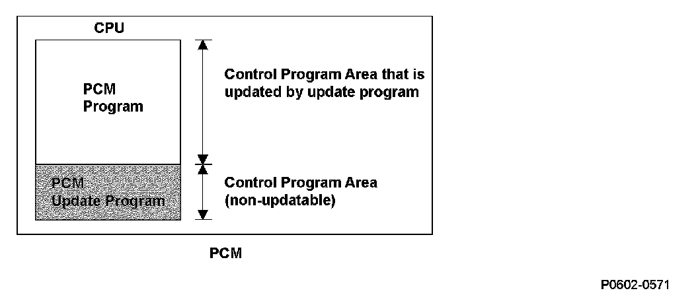

Advanced Diagnostics
DTC P0602: Powertrain Control Module (PCM) Programming Error
General Description
The powertrain control module (PCM) is equipped with an update program to update its control program. The programs in the CPU of the PCM are classified as a PCM program (update-capable program) and a program for the update function (non-updateable program). The program update only updates the PCM program.
When the PCM power is turned off during an update, the power for the update function is lost, and the update process stops. When the program update is stopped before it is completed, the PCM stores a DTC that indicates the update is not finished.
Monitor Execution, Sequence, Duration, DTC Type, OBD Status
Enable Conditions
Malfunction Threshold
The PCM program update is stopped before it is finished for at most 1 second.
Diagnosis Details
Conditions for illuminating the MIL
When the PCM program is not written in the PCM, the MIL comes on and the DTC is stored in the PCM memory.
Conditions for clearing the MIL
The MIL and the DTC will be cleared when the PCM program update is complete.